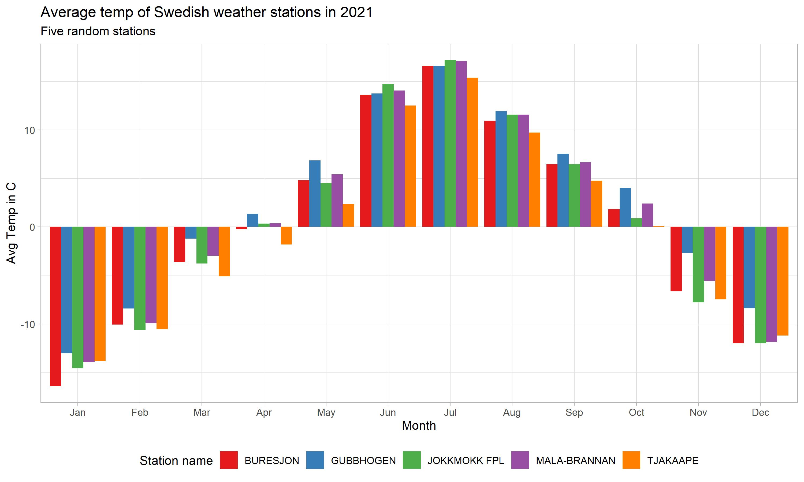

We could do some more fancy plotting with geographical data,
but I think I’ll save that for another post.
We could do some more fancy plotting with geographical data,
but I think I’ll save that for another post.Last week I read a paper: “Weathering cash flow shocks” by Brown et al. (2021) which cleverly used unexpected severe winter weather as a setting to examine shocks to firm cash flow and the effect these cash flow shocks have on utilizing and increasing credit lines.
The authors scrape decades worth of publicly available weather station data from across the United States to identify abnormal snow cover in counties where firm headquarters are located. They use this data to identify exogenous shocks to cash flow and subsequently test behavior related to external finance access. Neat!
My first thought when reading this was: “I wonder if there is an R package for getting this weather data?”
What do you know, there is! Two in fact!
I first took a look at the rnoaa package available on CRAN, and after spending some time with it I concluded it was a little tricky to navigate and the documentation left a little to be desired.
I then stumbled upon the interesting FluMoDL package, which has a focus on implementing methods to estimate influenza-attributable mortality. That sounds like absolutely nothing to do with weather station data, but just wait.
A primary input in these influenza-mortality models turns out to be daily mean temperature for the region in focus. The authors bundled up some functions that efficiently access and return weather station data from NOAA.
Here’s how it works. the function NOAA_getGSOD will download daily weather summaries for a set of weather stations for a given set of years. First, we will need to get a list of stations. FluMoDL has two functions to do this, NOAA_allStations, which returns a list of all available stations, and NOAA_countryStations which downloads a list of stations located in a particular country. We’ll be be using the latter to grab some Swedish weather data.
install.packages("FluMoDL")
library(FluMoDL)
library(tidyverse)
library(lubridate)station_list_sw <- NOAA_countryStations('SW',
from = 2020,
to = 2021) #returns Swedish stations from 2020-2021
str(station_list_sw) > str(station_list_sw)
'data.frame': 157 obs. of 11 variables:
$ usaf : chr "020480" "020500" "020520" "020530" ...
$ wban : int 99999 99999 99999 99999 99999 99999 99999 99999 99999 99999 ...
$ station.name: chr "MALMBERGET" "RIKSGRANSEN" "KVIKKJOKK &" "MALMBERGET" ...
$ ctry : chr "SW" "SW" "SW" "SW" ...
$ state : chr "" "" "" "" ...
$ icao : chr "" "" "" "" ...
$ lat : num 67.2 68.4 67 67.1 68 ...
$ lon : num 20.7 18.1 17.8 20.7 21.8 ...
$ elev.m. : num 375 508 337 365 360 402 17 7 318 403 ...
$ begin : Date, format: "1935-01-01" "1935-01-01" ...
$ end : Date, format: "1991-05-05" "1977-06-30" ...Notice is that NOAA_countryStations returns the latitude and longitude of the stations, data which we could use to make some nice maps, more on that later. Also, it appears the variable end contains dates outside of our range, this could be an error of some sort, but we’ll fix this below.
We’ll limit our scope and pull data for the first 20 weather stations, using head(20) to return the first 20 observations of station_list_sw. As we are pulling daily weather data, we’ll stick to a relatively small amount of data for this exercise, but it should give you an idea of what is possible with FluMoDL.
First, we filter out observations with years below 2020 leveraging the year function in lubridate. Then we will pass the object to NOAA_getGSOD, along with a year range, just 2021 in this case, and a few options to download some data: match.columns = “station.name” to include a vector of stations names in the output, and progress = TRUE to include a progress bar on the download.
stations_sw <- station_list_sw %>%
filter(year(end) >= 2021) %>%
head(20)
df_station <- NOAA_getGSOD(stations_sw,
years = 2021,
match.columns = "station.name",
progress = TRUE)
head(df_station)Here’s a peak at what the data look like.
> head(df_station)
usaf wban date temp tempC dewp dewpC slp slpC stp stpC visib visibC wdsp
1 020550 99999 2021-01-01 -5.5 24 -6.9 24 NA 0 NA 0 19.6 24 3.7
2 020640 99999 2021-01-01 -4.6 24 -7.0 24 NA 0 NA 0 16.5 24 3.7
3 020810 99999 2021-01-01 -5.6 24 -6.8 24 1015.7 24 974.2 24 18.7 23 4.9
4 020550 99999 2021-01-02 -8.2 24 -9.6 24 NA 0 NA 0 27.0 24 3.0
5 020640 99999 2021-01-02 -6.3 24 -9.5 24 NA 0 NA 0 23.0 24 2.3
6 020810 99999 2021-01-02 -7.3 24 -8.6 24 1018.2 24 976.5 24 26.4 24 2.6
wdspC mxspd gust maxtemp maxtempF mintemp mintempF prcp prcpF sndp frshtt station.name
1 23 7.8 NA -3.3 -8.5 0.05 G NA 1000 NAIMAKKA
2 24 5.8 11.5 -2.8 * -7.4 * 0.12 G NA 1000 SAITTAROVA
3 24 7.8 NA -3.1 -8.0 0.03 G NA 1000 KARESUANDO
4 18 3.9 NA -7.0 -14.4 * 0.00 G NA 1000 NAIMAKKA
5 24 4.1 NA -5.8 * -7.4 0.03 G NA 1000 SAITTAROVA
6 22 5.8 NA -6.4 -13.9 * 0.00 G NA 1000 KARESUANDOWe can now merge the weather data with the station data and some some quick tidying to get a nice final data set to work with. We will take advantage of the pipe and dplyr’s excellent data cleaning functions, coupled with group_by and summarise to get a monthly average temperature by station.
df_weather_sw <- df_station %>%
left_join(station_list_sw,
by = "station.name") %>%
select(date, station.name, temp, lat, lon) %>%
mutate(month = month(date, label = TRUE)) %>%
group_by(station.name, month) %>%
summarise(mean_temp = mean(temp),
lat = lat,
lon = lon)theme_set(theme_light())
rand_station <- df_weather_sw %>% # Select 5 random stations from df
group_by(station.name) %>%
summarise() %>%
sample_n(5)
df_weather_sw %>%
filter(station.name %in% rand_station$station.name) %>%
ggplot(aes(x = factor(month), y = mean_temp, fill = station.name)) +
geom_bar(position="dodge", stat="identity") +
scale_fill_brewer(palette = "Set1") +
labs(title = "Average temp of Swedish weather stations in 2021",
subtitle = "Five random stations",
x = "Month",
y = "Avg Temp in C",
fill = "Station name") +
theme(legend.position="bottom")
While we’re at it, we can load the sf and rnaturalearth packages to quickly plot the location of the weather stations we downloaded on a map.
library(sf)
library(rnaturalearth)
world <- ne_countries(scale = "medium", returnclass = "sf")
ggplot(data = world) +
geom_sf() +
geom_point(data = df_weather_sw, aes(x = lon, y = lat), size = 2,
shape = 23, fill = "darkred")+
coord_sf(xlim = c(1,30), ylim = c(55,72), expand = TRUE) +
labs(title = "Location of weather stations in Sweden",
subtitle = "First 20 stations from our download",
x = "Longitude",
y = "Latitude")
We could do some more fancy plotting with geographical data,
but I think I’ll save that for another post.
Happy weather plotting!
For more information on FluMoDL check it out here:
https://www.rdocumentation.org/packages/FluMoDL/versions/0.0.3